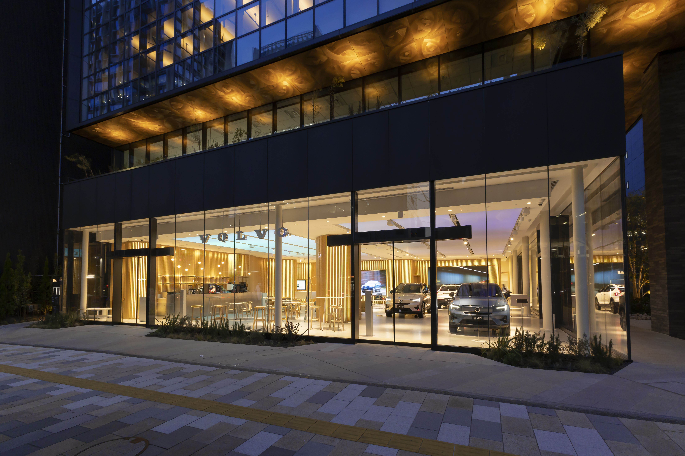

3rd MINAMI AOYAMA
1a出口から徒歩約4分
外苑前駅から。
東京メトロ銀座線「外苑前駅」を利用します。ホーム・改札の案内表示で、まず「1a出口」を探してください。
駅から建物までの目印
徒歩約4分。青山通り沿いを進みます。
- G03 外苑前駅・1a出口地上に出たら表参道方面へ
- 南青山三丁目交差点横断歩道を渡り、青山通りをそのまま進む
- 3rd MINAMI AOYAMAオルクドール・サロンAOYAMAの入る建物
道順の流れを整理した図です。位置・距離は地図アプリでご確認ください。
- 1
「1a出口」から地上へ
外苑前駅の出口表示を確認し、1a出口へ。出口を出たら青山通りを表参道方面へ進みます。
- 2
南青山三丁目交差点を通過
青山通り沿いに歩き、交差点では横断歩道を渡って直進します。外苑西通りに沿って曲がらず、表参道方面へ進んでください。
- 3
「3rd MINAMI AOYAMA」に到着
建物名と住所「南青山3-1-34」を確認します。青山通り沿いの、1階に「Volvo Studio Tokyo（ボルボ）」が入る建物です。到着後は下の1階からの案内へ。
今回は「青山・外苑前」の案内です。日本橋駅や髙島屋のある会場とは別の場所です。
建物1階から。
徒歩・タクシーで建物まで到着した方はこちら。建物名を確かめてから、館内の案内に沿って会場へ向かいます。

写真を大きく見る ↗1階の「VOLVO」が目印です。
こちらが、青山通り側から見たボルボのショールームです。この建物のオルクドールへの館内案内を確認してお進みください。
写真：ボルボ・カー・ジャパン 公式プレス資料（2023年公開） ↗掲載写真と、現在の展示車・店内の装飾は異なる場合があります。
3rd MINAMI
AOYAMA
〒107-0062東京都港区南青山3丁目1番34号
1階・青山通り側の「Volvo Studio Tokyo（ボルボ スタジオ 東京）」が目印です。タクシーでは、建物名と住所を一緒にお伝えください。
建物の公式情報・外観写真を見る ↗- 1
建物名を確認し、エントランスへ
1階の「VOLVO」ショールームを目印に、「3rd MINAMI AOYAMA」の表示を確認します。入館は、オルクドールへの館内案内に従ってください。
- 2
入館方法と、受付階を確認
主催者の招待メールや当日の掲示で、受付階とエレベーターの利用方法を確認します。入館に案内が必要な場合は、現地スタッフの指示に従ってください。
- 3
指定の会場階で受付
案内されたエレベーターで、指定の会場階へ。到着したら、催し名を確認して受付にお声がけください。
最後は、
開催案内の受付階へ。
オルクドール・サロンAOYAMAは12・13階の施設です。今回の催しの受付階・入館手順は、開催案内をご確認ください。
建物の入口や受付方法は、催し・時間帯によって変わる場合があります。お困りの際は主催者へご連絡ください。
- 011a出口外苑前駅から地上へ
- 02建物1F3rd MINAMI AOYAMAの入口へ
- 03会場階開催案内に記載の受付へ